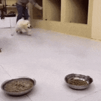

한식뷔페 먹방 근황
댓글
잘먹네
와 김치랑 똥국은 진짜 개맛있겠다
건강식
재희네 이제 뒤졌다


한판더
아시발 배고프네
이새끼 젓가락질 잘하는거보소 ㅋㅋㅋㅋㅋㅋㅋㅋㅋ
아 시발침고인다.. 내일점심 한식뷔페다.
요새 한식뷔페 8천원에 메인반찬 2~3개 나오는데 좀 아쉽네
아침부터 제대로 먹네 ㅋㅋㅋ
아침밥으로 괜찬지만 8천원은 초큼...이러순간에 제육나오네 킹정...제육없이 아침식사만으로 5~6천이였어도 갔을듯
물줄 아네
이게 왜 근황?
한번만 먹음?
이거 왜 기묘하게 얼굴에 AI 필터 입힌거 같음
가끔 회사 한식뷔페에 외국인 관광객 오더니.. 이런거 보고 찾아오는건가
와 우거지국
똥국 색봐라 ㅈㄴ진하겠다

왤케 손을 털어대 ㅆㅂ 똥가루 떨어지게
제육나오는대 8천원이면 개좋아 요즘 기본이 만원인데
서울에 괜찮은 함바 없나
샌들 불편하더라
마지막에 혀 팔레트 닦는 용도로 고추지 하나 남겨두는 무빙 내가 하는짓인데 ㅋㅋㅋ